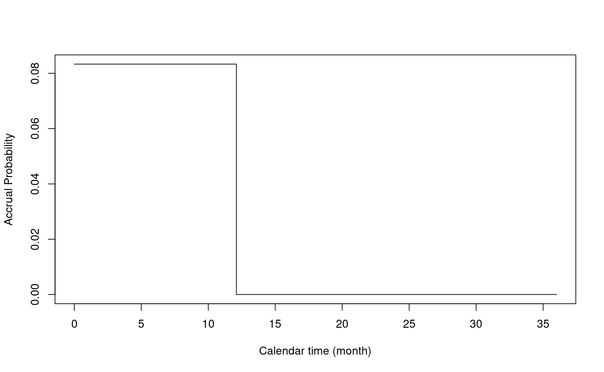
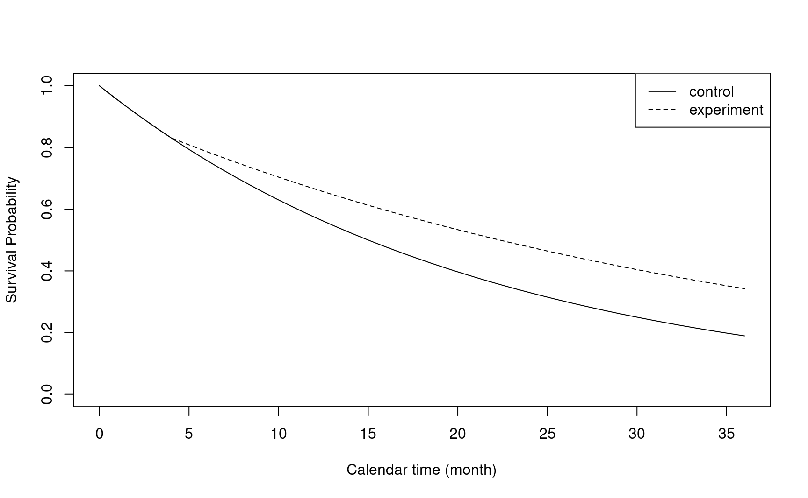
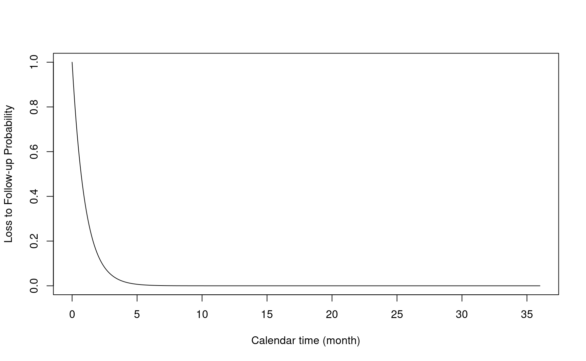
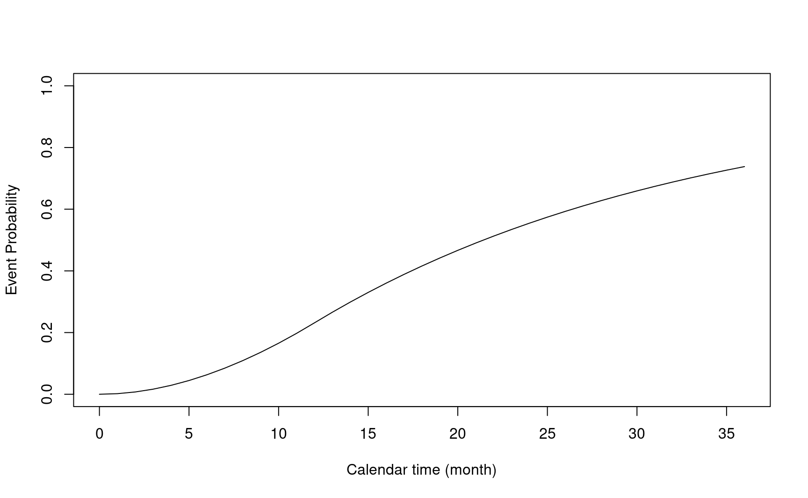
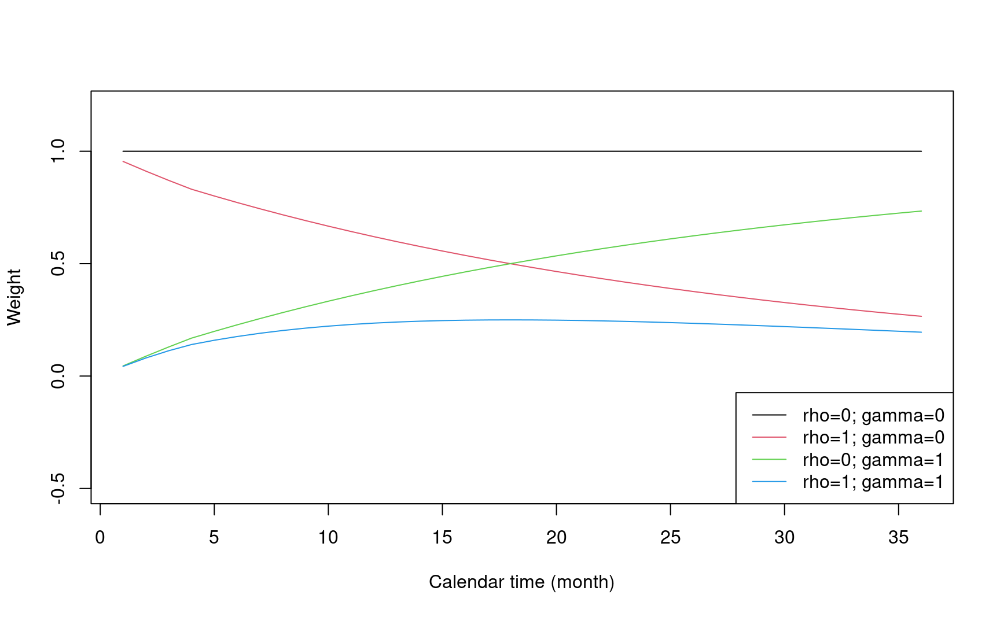
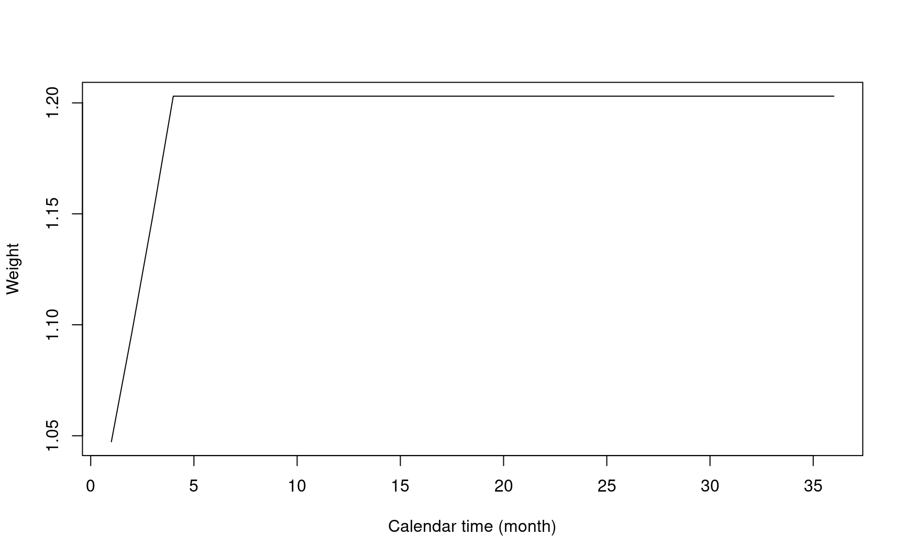
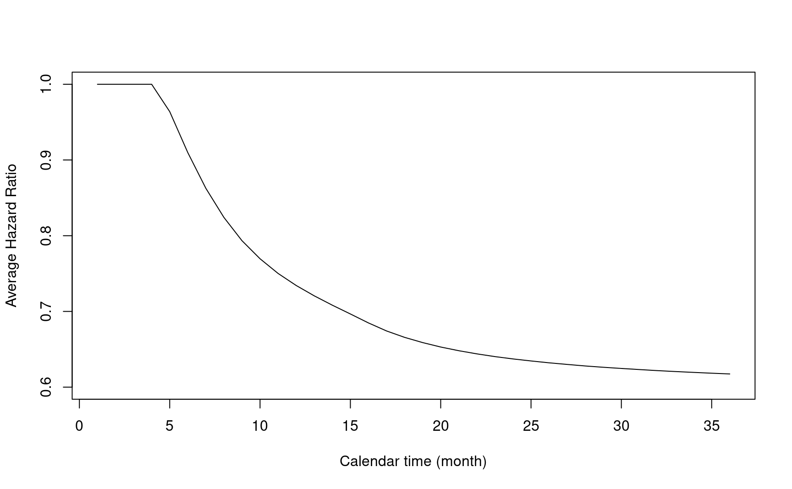

5 Fixed design
We will briefly review fixed design based on weighted logrank test and MaxCombo test.
For fixed design, npsurvSS will be the tool for this training.
The fixed design part largely follows the concept described in Yung and Liu (2019).
5.1 Summary of assumptions
For simplicity, we made a few key assumptions.
- Balanced design (1:1 randomization ratio).
- 1-sided test.
- Local alternative: variance under null and alternative are approximately equal.
- Accrual distribution:
- Piecewise uniform using
npsurvSS::create_arm() - Poisson process with piecewise uniform enrollment using
gsDesign::nSurv()Lachin and Foulkes (1986) andgsdmvn::gs_design_ahr()
- Piecewise uniform using
- Survival distribution: piecewise exponential
- Loss to follow-up: exponential
- No stratification
- No cure fraction
Some of these assumptions have been generalized in the literature and the R package gsdmvn. These assumptions will be used unless another clarification is made in specific sections.
5.2 Notation
We also define some commonly used notations as below.
- \(\alpha\): Type I error
- \(\beta\): Type II error or power (1 - \(\beta\))
- \(z_\alpha\): upper \(\alpha\) percentile of standard normal distribution
- \(z_\beta\): upper \(\beta\) percentile of standard normal distribution
For illustration purpose, we considered a 1-sided test with type I error at \(\alpha=0.025\) and \(1-\beta=80\%\) power. In R, it is easy to calculate \(z_\alpha\) and \(z_\beta\) as below.
5.3 Sample size calculation
- \(\theta\): effect size.
To calculate sample size, a key step is to define the effect size. For example, the effect size in two-sample t-test is \((\mu_1 - \mu_2)/\sigma\), where \(\mu_1\) and \(\mu_2\) are group mean and \(\sigma\) is pooled standard deviation.
\(n\): total sample size.
-
\(Z\): test statistics is asymptotic normal.
- Under null hypothesis: \(Z \sim \mathcal{N}(0, \sigma_0^2)\)
- Under alternative hypothesis: \(Z \sim \mathcal{N}(\sqrt{n}\theta, \sigma_1^2)\)
By assuming local alternative, we have
\[\sigma_0^2 \approx \sigma_1^2 = \sigma^2\] In this simplified case, the sample size can be calculated as
\[ n = \frac{4 (z_{\alpha}+z_{\beta})^{2}}{\theta^2} \] Here \(\theta\) is standardized treatment effect.
5.4 Two-sample t-test
Let’s revisit the two-sample t-test to make a connection between the math formula and R code.
In two-sample t-test, we have
\[\theta = \frac{\Delta}{\sigma}\], where \(\theta\) is difference of mean in two groups and \(\sigma\) is standard deviation of \(\theta\).
If we consider a scenarios with treatment effect at 0.5 with pooled standard deviation at 2.
Let’s calculate the sample size using the formula above.
# Effect size
theta <- 0.5 / 2# Sample size formula
4 * (z_alpha + z_beta)^2 / theta^2
#> [1] 502.3283The same assumption is used in gsDesign::nNormal().
gsDesign::nNormal(delta1 = 0.5, sd = 2, alpha = 0.025, beta = 0.2)
#> [1] 502.3283stats::power.t.test() uses the t-distribution for test statistics that is recommended in practice. It provides a slightly larger sample size under the same study design scenario.
stats::power.t.test(delta = 0.5, sd = 2, sig.level = 0.05, power = 0.8)$n * 2
#> [1] 504.25625.5 Logrank test
Let’s also explore the number of events required for logrank test under the proportional hazards assumption. It is well known that the sample size calculation is “event-driven” in this special case.
This is a nice feature under the proportional hazards assumption. because the effect size for number of events is only depends on the hazard ratio.
Notation: \(\text{HR}\) is the hazard ratio. \(d\) is the number of events.
The effect size is: \[\theta = \log{\text{HR}} / 2\]
As an exercise, the readers can derive the effect size following Section 9.5 of the NCSU ST520 course notes. The effect size is in formula (9.3) of the course notes.
With the effect size, we can use the same formula to calculate the number of events (\(d\)) as below.
\[ d = \frac{4 (z_{\alpha}+z_{\beta})^{2}}{(\log{\text{HR}/2})^2} \]
After the total number of events is defined, the sample size (\(n\)) can be determined based on accrual distribution, survival distribution loss to follow-up distribution and study duration.
The sample size calculation has been implemented in
For simplicity, we skip the details of sample size calculation discussed in Lachin and Foulkes (1986).
Let’s make connection between math formula and R code by considering a scenario with hazard ratio at 0.6.
# Effect size
theta <- log(0.6) / 2# Number of Events
(z_alpha + z_beta)^2 / theta^2
#> [1] 120.3157We compare the results using npsurvSS. The key argument in npsurvSS::create_arm() is surv_scale that defines the hazard rates in each arm.
# Define study design assumption for each arm
arm0 <- npsurvSS::create_arm(
size = 1, accr_time = 6, surv_scale = 1,
loss_scale = 0.1, follow_time = 12
)
arm1 <- npsurvSS::create_arm(
size = 1, accr_time = 6, surv_scale = 0.6,
loss_scale = 0.1, follow_time = 12
)Then we can use npsurvSS::size_two_arm() to calculate number of events and sample size.
# Sample size for logrank test
npsurvSS::size_two_arm(arm0, arm1,
power = 0.8, alpha = 0.025,
test = list(
test = "weighted logrank", weight = "1",
mean.approx = "event driven"
)
)
#> n0 n1 n d0 d1 d
#> 68.12167 68.12167 136.24335 61.92878 58.38693 120.31570The number of events from gsDesign::nSurv() is slightly smaller because gsDesign::nSurv() follows Lachin and Foulkes (1986) that relax the local alternative assumption and is recommended in practice.
gsDesign::nSurv(
lambdaC = 1,
hr = 0.6,
eta = 0.1,
alpha = 0.025,
beta = 0.2,
T = 18,
minfup = 12
)
#> Fixed design, two-arm trial with time-to-event
#> outcome (Lachin and Foulkes, 1986).
#> Solving for: Accrual rate
#> Hazard ratio H1/H0=0.6/1
#> Study duration: T=18
#> Accrual duration: 6
#> Min. end-of-study follow-up: minfup=12
#> Expected events (total, H1): 119.7983
#> Expected sample size (total): 135.6574
#> Accrual rates:
#> Stratum 1
#> 0-6 22.6096
#> Control event rates (H1):
#> Stratum 1
#> 0-Inf 1
#> Censoring rates:
#> Stratum 1
#> 0-Inf 0.1
#> Power: 100*(1-beta)=80%
#> Type I error (1-sided): 100*alpha=2.5%
#> Equal randomization: ratio=15.6 Non-proportional hazards
Under proportional hazard assumption, we commonly used an event-driven approach for sample size calculation. (i.e., calculate the number of events, then derive the sample size.)
- Event (\(d\)) to Sample size (\(n\)) or
d->n

Under non-proportional hazards, the event-driven approach is not applicable. We need to derive the sample size first.
- Sample size (\(n\)) to Event (\(d\)) or
n->d

- \(\tau_a\): accrual time
- \(\tau_f\): follow-up time
The two figures above are copied from Yung and Liu (2019).
Let’s consider a delayed effect scenario below to illustrate NPH and sample size calculation.
- Duration of enrollment: 12 months
- Enrollment rate: 500/12 per month
enrollRates <- tibble::tibble(Stratum = "All", duration = 12, rate = 500 / 12)
enrollRates
#> # A tibble: 1 × 3
#> Stratum duration rate
#> <chr> <dbl> <dbl>
#> 1 All 12 41.7- Failure rate in control group:
log(2) / 15- Median survival time: 15 months.
- Hazard ratio:
- First 4 months: 1
- After 4 months: 0.6
- Dropout Rate: 0.001
failRates <- tibble::tibble(
Stratum = "All",
duration = c(4, 100),
failRate = log(2) / 15, # Median survival 15 months
hr = c(1, .6), # Delay effect after 4 months
dropoutRate = 0.001
)
failRates
#> # A tibble: 2 × 5
#> Stratum duration failRate hr dropoutRate
#> <chr> <dbl> <dbl> <dbl> <dbl>
#> 1 All 4 0.0462 1 0.001
#> 2 All 100 0.0462 0.6 0.001The figure below illustrates the survival probability over time in two treatment groups.

5.7 Weighted logrank test
For the weighted logrank test, we first illustrate it by using the Fleming-Harrington weight.
\[FH^{\rho, \gamma}(t) = S(t)^\rho(1 - S(t))^\gamma\]
To demonstrate the weight function, we covert the input of enrollRates and failRates as required by npsurvSS.
# Define study design object in each arm
gs_arm <- gsdmvn:::gs_create_arm(
enrollRates,
failRates,
ratio = 1, # Randomization ratio
total_time = 36 # Total study duration
)
arm0 <- gs_arm[["arm0"]]
arm1 <- gs_arm[["arm1"]]Note: in npsurvSS, p1_q0 is for \(\rho=q=0\) and \(\gamma=p=1\)
- FH(0,1): Place more weights on later time points
npsurvSS::size_two_arm(arm0, arm1,
power = 0.8, alpha = 0.025,
test = list(test = "weighted logrank", weight = "FH_p1_q0")
)
#> n0 n1 n d0 d1 d
#> 138.39353 138.39353 276.78707 102.15617 81.23792 183.39408- FH(1,1): Place more weights on middle time points
npsurvSS::size_two_arm(arm0, arm1,
power = 0.8, alpha = 0.025,
test = list(test = "weighted logrank", weight = "FH_p1_q1")
)
#> n0 n1 n d0 d1 d
#> 130.75651 130.75651 261.51302 96.51884 76.75493 173.27377- FH(1,0): Place more weights on earlier time points
npsurvSS::size_two_arm(arm0, arm1,
power = 0.8, alpha = 0.025,
test = list(test = "weighted logrank", weight = "FH_p0_q1")
)
#> n0 n1 n d0 d1 d
#> 237.5982 237.5982 475.1964 175.3848 139.4717 314.8565- FH(0,0) or logrank test
# Sample size for logrank test
npsurvSS::size_two_arm(arm0, arm1,
power = 0.8, alpha = 0.025,
test = list(test = "weighted logrank", weight = "FH_p0_q0")
)
#> n0 n1 n d0 d1 d
#> 164.97626 164.97626 329.95252 121.77839 96.84215 218.620555.7.1 Effect size
In Yung and Liu (2019), section 2.3.3, it is shown that the test statistics \(Z\rightarrow_d\mathcal{N}(\sqrt{n}\theta, 1)\) approximately, where \(\theta = \Delta/\sigma\) is the effect size. Here the test statistics for weighted logrank test is:
\[ Z=\sqrt{\frac{n_{0}+n_{1}}{n_{0}n_{1}}}\int_{0}^{\tau}w(t)\frac{\overline{Y}_{0}(t)\overline{Y}_{1}(t)}{\overline{Y}_{0}(t)+\overline{Y}_{0}(t)}\left\{ \frac{d\overline{N}_{1}(t)}{\overline{Y}_{1}(t)}-\frac{d\overline{N}_{0}(t)}{\overline{Y}_{0}(t)}\right\} \]
- Weight \(w(t)\): implemented in gsdmvn.
- Integration up to total follow-up time \(\tau\).
weight <- function(x, arm0, arm1) {
gsdmvn::wlr_weight_fh(x, arm0, arm1, rho = 0, gamma = 1)
}\[\Delta=\int_{0}^{\tau}w(s)\frac{p_{0}\pi_{0}(s)p_{1}\pi_{1}(s)}{\pi(s)}\{\lambda_{1}(s)-\lambda_{0}(s)\}ds\],
delta <- abs(gsdmvn:::gs_delta_wlr(
arm0, arm1,
tmax = arm0$total_time,
weight = weight
))
delta
#> [1] 0.02623776\[\sigma^{2}=\int_{0}^{\tau}w(s)^{2}\frac{p_{0}\pi_{0}(s)p_{1}\pi_{1}(s)}{\pi(s)^{2}}dv(s)\]
sigma2 <- gsdmvn:::gs_sigma2_wlr(
arm0, arm1,
tmax = arm0$total_time,
weight = weight
)
sigma2
#> [1] 0.0242674Below are definitions of each component.
- \(n = n_0 + n_1\): Total sample size
- \(p_0 = n_0/n\), \(p_1 = n_1/n\): Randomization probability inferred by randomization ratio
- \(\pi_0(t) = E\{N_0(t)\}\), \(\pi_1(t) = E\{N_1(t)\}\)
- \(\pi(t) = p_0\pi_0(t)+p_1\pi_1(t)\): Probability of events
- \(v(t) = p_0E\{Y_0(t)\}+p_1E\{Y_1(t)\}\): Probability of people at risk
5.7.2 Sample size and number of events
We can calculate sample size after deriving the effect size.
\[ n = \frac{\sigma^{2}(z_{\alpha}+z_{\beta})^{2}}{\Delta^2} = \frac{(z_{\alpha}+z_{\beta})^{2}}{\theta^2} \]
# Sample size for FH(0,1)
npsurvSS::size_two_arm(arm0, arm1,
power = 0.8, alpha = 0.025,
test = list(test = "weighted logrank", weight = "FH_p1_q0")
)
#> n0 n1 n d0 d1 d
#> 138.39353 138.39353 276.78707 102.15617 81.23792 183.39408The number of events can also be calculated as below. More details can be found in the technical details.
n0 <- n1 <- n / 2
gsdmvn:::prob_event.arm(arm0, tmax = arm0$total_time) * n0 +
gsdmvn:::prob_event.arm(arm1, tmax = arm0$total_time) * n1
#> [1] 183.3235.8 Technical details
5.8.1 Accrual and follow-up time
- \(R\): time of study entry
- \(F_R(\cdot)\) CDF of \(R\)
x <- seq(0, arm0$total_time, 0.1)
# Piecewise Uniform Distribution
plot(x, npsurvSS::daccr(x, arm = arm0),
type = "s",
xlab = "Calendar time (month)",
ylab = "Accrual Probability"
)
- \(\tau_a\): accrual time
arm0$accr_time
#> [1] 12- \(\tau_f\): follow-up time
arm0$follow_time
#> [1] 24- \(\tau = \tau_a + \tau_f\): total study duration
arm0$total_time
#> [1] 365.8.2 Event time
- \(T\): time to event from study entry.
- \(S_T(\cdot)\): Survival function
- \(F_T(\cdot)\): CDF of \(T\)
- \(f_T(\cdot)\): Density function
# Survival function of time to event from study entry
# Piecewise Exponential distribution
plot(x, 1 - npsurvSS::psurv(x, arm0),
type = "l",
xlab = "Calendar time (month)",
ylab = "Survival Probability",
ylim = c(0, 1)
)
lines(x, 1 - npsurvSS::psurv(x, arm1), lty = 2)
legend("topright", lty = c(1, 2), legend = c("control", "experiment"))
5.8.3 Censoring time
- \(L\): time to loss of follow-up from study entry
- \(S_L(\cdot)\): Survival function of \(L\)
# PDF of the time to loss of follow-up from study entry
# Exponential Distribution
plot(x, 1 - pexp(x),
type = "l",
xlab = "Calendar time (month)",
ylab = "Loss to Follow-up Probability"
)
- \(C = \min(L, \tau - R)\): time to censoring from study entry.
5.8.4 Observed time
- \(U = \min(T,C)\): observed time.
- \(\delta = I(T<C)\): event indicator
5.8.5 Expected events
- \(N(t) = I(U \le t, \delta = 1)\): counting process
- \(E\{N(t)\}\): expected probability of events
\[E\{N(t)\} = \int_{0}^{t}f_{T}(s)S_{L}(s)F_{R}(\tau_{a}\land(\tau-s))ds\]
# Probability of Events
x_int <- 0:arm0$total_time
plot(x_int, gsdmvn:::prob_event.arm(arm0, tmax = x_int),
type = "l",
xlab = "Calendar time (month)",
ylab = "Event Probability",
ylim = c(0, 1)
)
- \(Y(t) = I(U\ge t)\): at-risk process
- \(E\{Y(t)\}\): expected probability at risk
\[E\{Y(t)\} = S_{T}(s)S_{L}(s)F_{R}(\tau_{a}\land(\tau-s))\]
5.8.6 Weight function in weighted logrank test
- Define different weight functions in gsdmvn
- Weight function: \(w(t)\)
- Constant weight (logrank test): \(1\)
gsdmvn::wlr_weight_1(x = c(12, 24, 36), arm0, arm1)
#> [1] 1- Fleming-Harrington weight: \(w(t) = FH^{\rho, \gamma}(t) = S(t)^\rho(1 - S(t))^\gamma\)
weight_legend <- apply(
expand.grid(
c("rho=0", "rho=1"),
c("gamma=0", "gamma=1")
),
1,
paste0,
collapse = "; "
)
plot(
1:36,
gsdmvn::wlr_weight_fh(x = 1:36, arm0, arm1, rho = 0, gamma = 0),
xlab = "Calendar time (month)", col = 1,
ylab = "Weight", type = "l", ylim = c(-0.5, 1.2)
)
lines(
1:36,
gsdmvn::wlr_weight_fh(x = 1:36, arm0, arm1, rho = 1, gamma = 0),
col = 2
)
lines(
1:36,
gsdmvn::wlr_weight_fh(x = 1:36, arm0, arm1, rho = 0, gamma = 1),
col = 3
)
lines(
1:36,
gsdmvn::wlr_weight_fh(x = 1:36, arm0, arm1, rho = 1, gamma = 1),
col = 4
)
legend("bottomright", legend = weight_legend, lty = 1, col = 1:4)
- Modestly WLR: \(S^{-1}(t\land\tau_m)\) Magirr and Burman (2019).
- Choose \(\tau_m\) around the change point in delay effect scenario.
- Only down-weight early event. Constant weight after change point.
plot(
1:36,
gsdmvn::wlr_weight_fh(
x = 1:36, arm0, arm1, rho = -1, gamma = 0, tau = 4
),
xlab = "Calendar time (month)",
ylab = "Weight",
type = "l"
)
5.8.7 Average hazard ratio
- \(\Delta\) is a weighted average of hazard function difference \(\lambda_{1}(\cdot)-\lambda_{0}(\cdot)\).
\[\Delta=\int_{0}^{\tau}w(s)\frac{p_{0}\pi_{0}(s)p_{1}\pi_{1}(s)}{\pi(s)}\{\lambda_{1}(s)-\lambda_{0}(s)\}ds\]
- Taylor expansion builds a connection between \(\Delta\) and weighted average of log hazard ratio (AHR). It is a generalization of the Schoenfeld (1981) asymptotic expansion.
\[\Delta\approx\int_{0}^{\tau}w(s)\log\left(\frac{\lambda_1(s)}{\lambda_0(s)}\right)\frac{p_{0}\pi_{0}(s)p_{1}\pi_{1}(s)}{\pi(s)^2}v'(s)ds\]
- Log of AHR can be estimated after normalizing the weights in \(\Delta\)
\[ \log{AHR} = \frac{\Delta}{\int_{0}^{\tau}w(s)\frac{p_{0}\pi_{0}(s)p_{1}\pi_{1}(s)}{\pi(s)^2}v'(s)ds} \]
t <- 1:36
log_ahr <- sapply(t, function(t) {
gsdmvn:::gs_delta_wlr(arm0, arm1, tmax = t, weight = weight) /
gsdmvn:::gs_delta_wlr(arm0, arm1,
tmax = t, weight = weight,
approx = "generalized schoenfeld", normalization = TRUE
)
})
plot(t, exp(log_ahr),
ylim = c(0.6, 1),
xlab = "Calendar time (month)",
ylab = "Average Hazard Ratio",
type = "l"
)
- Note the AHR depends on the choice of weight function \(w(\cdot)\).
- Under logrank test with piecewise exponential distribution and 1:1 randomization ratio, it can be simplified to
\[\log(AHR) = \frac{\sum d_i \log{HR_i}}{\sum d_i}\]
gsDesign2::AHR(enrollRates, failRates, totalDuration = arm0$total_time)
#> # A tibble: 1 × 5
#> Time AHR Events info info0
#> <dbl> <dbl> <dbl> <dbl> <dbl>
#> 1 36 0.683 331. 81.4 82.8log_ahr <- gsdmvn:::gs_delta_wlr(
arm0, arm1,
tmax = arm0$total_time,
weight = gsdmvn:::wlr_weight_1
) /
gsdmvn:::gs_delta_wlr(
arm0, arm1,
tmax = arm0$total_time,
weight = gsdmvn:::wlr_weight_1,
approx = "generalized schoenfeld",
normalization = TRUE
)
exp(log_ahr)
#> [1] 0.6831735Also computed by gsDesign2::AHR().
5.9 MaxCombo test
MaxCombo test statistics is the maximum of multiple WLR test statistics using different weight functions. We focus on Fleming and Harrington weight function \(FH(\rho, \gamma)\) defined in gsdmvn::wlr_weight_fh().
To calculate the sample size for the MaxCombo test, we will need to know the variance-covariance of multiple WLR test statistics.
For Fleming and Harrington weight function, the covariance of different WLR test statistics can be calculated. Based on Karrison (2016) and Wang, Luo, and Zheng (2019), the covariance of two test statistics \(Z_1 = Z(\rho_1, \gamma_1), Z_2 = Z(\rho_2, \gamma_2)\) is
\[\text{Cov}(Z_1, Z_2) = \text{Var}(Z(\frac{\rho_1 + \rho_2}{2}, \frac{\gamma_1 + \gamma_2}{2}))\]
- We illustrate the idea based on \(FH(0, 0.5)\) and \(FH(0.5, 0.5)\)
- All weight functions
weight_combo <- list(
function(x, arm0, arm1) {
gsdmvn::wlr_weight_fh(
x, arm0, arm1,
rho = 0, gamma = 0.5
)
},
function(x, arm0, arm1) {
gsdmvn::wlr_weight_fh(
x, arm0, arm1,
rho = 0.25, gamma = 0.5
)
},
function(x, arm0, arm1) {
gsdmvn::wlr_weight_fh(
x, arm0, arm1,
rho = 0.25, gamma = 0.5
)
},
function(x, arm0, arm1) {
gsdmvn::wlr_weight_fh(
x, arm0, arm1,
rho = 0.5, gamma = 0.5
)
}
)- \(\Delta\)
- Covariance
- Correlation
corr_combo <- cov2cor(sigma2_combo)
corr_combo
#> [,1] [,2]
#> [1,] 1.000000 0.989493
#> [2,] 0.989493 1.0000005.9.1 Type I error and power
The formula to calculate sample size based on effect size does not directly apply, because the test statistic for MaxCombo is not asymptotically normal.
The type I Error should be:
\[ \alpha = \text{Pr}(\max(Z_1, Z_2) > z_{\alpha} \, | \, H_0) = 1 - \text{Pr}(Z_1 < z_{\alpha}, Z_2 < z_{\alpha} \, | \, H_0) \]
z_alpha <- qmvnorm(p = 1 - 0.025, corr = corr_combo)
z_alpha$quantile
#> [1] 2.014555The power should be
\[ \beta = \text{Pr}(\max(Z_1, Z_2) > z_{\alpha} \, | \, H_1) = 1 - \text{Pr}(Z_1 < z_{\alpha}, Z_2 < z_{\alpha} \, | \, H_1) \]
#' @param n Sample size
#' @param power Target power. Use power=0 to calculate the actual power.
power_combo <- function(n, power = 0) {
theta <- abs(delta_combo) / sqrt(diag(sigma2_combo))
power_combo <- 1 - pmvnorm(
upper = z_alpha$quantile,
mean = sqrt(n) * theta, corr = corr_combo
)
as.numeric(power_combo) - power
}
power_combo(n = 150)
#> [1] 0.54933685.9.2 Sample size
To calculate the sample size, we can solve the power function with a giving Type I error and power.
c(z = z_alpha$quantile, n = n_combo, power = power_combo(n_combo))
#> z n power
#> 2.014555 271.045320 0.8000005.9.3 Number of events
The number of events required can be calculated accordingly as in weighted logrank test.
n0 <- n1 <- n_combo / 2
gsdmvn:::prob_event.arm(arm0, tmax = arm0$total_time) * n0 +
gsdmvn:::prob_event.arm(arm1, tmax = arm0$total_time) * n1
#> [1] 179.5897